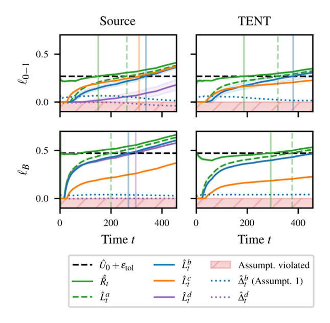

文章列表
-
On the Learnability of Test-Time Adaptation 【ICML 2026】，南京大学，Yu-Feng Li组
-
Monitoring Risks in Test-Time Adaptation 【NeurIPS 2025】，University of Amsterdam，Eric Nalisnick组
On the Learnability of Test-Time Adaptation
研究动机
本文研究TTA的可学习性问题。
针对现阶段TTA研究方法以经验为主，缺乏理论分析的情形，作者提出了以恢复复杂度为核心的理论框架，用来刻画当面临存在域偏移的变化数据流时，模型是否有恢复原先准确度的能力，以及需要的恢复时间。
文章使用了许多在线学习和统计学习的工具，并将其和TTA的特殊限制（只能使用未标注数据和代理损失）结合起来，得到了一个较为完整的理论分析体系。
方法

建模 TTA 问题
测试流记为：
$$ S={D_t}_{t=1}^{T} $$每个批次 $D_t$ 来自时刻 $t$ 的联合分布 $P_t$。模型在测试时不能访问标签，只能利用无监督代理损失 $\psi$ 更新参数：
$$ \theta_{t+1}=\theta_t-\eta \widehat{\nabla}\psi_t(\theta_t) $$其中 $\ell$ 是真实任务损失，$\psi$ 是代理损失。
TTA 能否成功，关键取决于代理损失和任务损失是否对齐。论文采用以下对齐假设：
$$ \langle \nabla\psi_t(\theta),\nabla\ell_t(\theta)\rangle \ge \alpha|\nabla\ell_t(\theta)|^2-\zeta $$其中：
- $\alpha>0$：代理梯度与任务梯度的对齐强度；
- $\zeta\ge 0$：代理损失和任务损失之间的错配程度。
建模非平稳测试流
论文从两个维度刻画测试流。
第一是 分布偏移 。作者使用 Wasserstein-1 距离度量相邻分布变化：
$$ V_T=\sum_{t=1}^{T-1}W_1(P_t,P_{t+1})<\infty $$然后用一个分段常数的近似流 $\widetilde P_t$ 替代原始连续变化的分布流，并保证：
$$ \sup_t W_1(P_t,\widetilde P_t)\le \Delta_W/2 $$偏移次数满足：
$$ \widetilde K_S(T)\le \left\lceil \frac{2V_T}{\Delta_W}\right\rceil $$这样，复杂的非平稳流可以被拆成若干个近似平稳子流。
第二是 时间相关性 。现实测试数据往往不是独立同分布的，比如视频连续帧高度相似。论文用 $\phi$-mixing 条件描述这种时间依赖，并指出时间相关性会降低有效 batch size：
$$ B_{\mathrm{eff}}=\frac{B}{C_\phi} $$其中：
$$ C_\phi=1+\frac{4\sqrt{\varrho}}{1-\sqrt{\varrho}} $$如果时间相关性越强，$\ C_\phi$ 越大，实际有效 batch size 越小，TTA 恢复越困难。
竞争目标
由于 TTA 只能使用未标注数据，不能假设模型能达到真实任务最优。因此论文用无监督损失构建代理目标：
$$ \theta_t^\star \in \arg\min_{\theta\in N_r(\theta_1)}\psi_t(\theta) $$对应的竞争目标风险为：
$$ R_t=\ell_t(\theta_t^\star) $$模型当前的超额风险定义为：
$$ E_t=\ell_t(\theta_t)-R_t $$恢复复杂度
定义$(\epsilon,\delta)$-恢复复杂度，含义为分布偏移发生后，算法至少需要多少时间步，才能保证之后超额风险超过 $\epsilon$ 的概率不超过 $\delta$：
$$ \tau(\epsilon,\delta)=\inf\left\lbrace t\in\mathbb{N}:\sup_{u\ge t}\Pr(E_u>\epsilon)\le\delta\right\rbrace $$分布变化后，模型多久能恢复？
恢复复杂度上下界
论文给出了恢复复杂度的极小极大下界：
$$ \tau \ge \Omega\left( \frac{C_\phi}{B} \cdot \frac{1}{ \alpha \left( \sqrt{\zeta+2\alpha\epsilon} + \sqrt{\zeta} \right)^2 } \right) $$在理想对齐情况下，即 $\zeta=0$，该下界退化为：
$$ \tau \ge \Omega\left( \frac{C_\phi}{B\alpha^2\epsilon} \right) $$这说明恢复时间主要受到四个因素影响：
- $B$ 越大，恢复越快；
- $C_\phi$ 越大，时间相关性越强，恢复越慢；
- $\alpha$ 越大，代理任务对齐越好，恢复越快；
- $\epsilon$ 越小，目标越严格，恢复越慢。
同时，论文分析了一个简单的 TTA 基线算法（单步SGD tent），并得到上界：
$$ \tau \le O\left( \frac{C_\phi}{B\alpha^2\epsilon} \log\frac{\Delta_W+\epsilon}{\epsilon} \right) $$上下界在主要量级上匹配，说明在该理论框架下，简单的代理梯度更新已经接近最优。
从局部恢复到全局可学习性
论文进一步定义 $(\epsilon,\rho)$-TTA 可学习性，表示在整个测试流中，超额风险超过 $\epsilon$ 的时间比例最多为 $\rho$ ：
$$ \frac{1}{T} \sum_{t=1}^{T} \mathbb P(\ell_t(\theta_t)-R_t>\epsilon) \le \rho $$作者证明，如果每个分段平稳子流都能在 $\tau(\epsilon',\delta)$ 步内恢复，那么整体违反比例满足：
$$ \rho \le \delta+ \frac{ (\widetilde K_S(T)+1)\tau(\epsilon',\delta) }{T} $$其中：
$$ \epsilon'=\epsilon-\Lambda\Delta_W $$这说明：
局部恢复越快，分布偏移次数越少，整个测试流上的长期可靠性越好。
与动态遗憾值的关系
论文还证明，如果 TTA 满足 ($\epsilon,\rho$)-可学习性，则动态遗憾值满足：
$$ \mathrm{Reg}(T) \le T(\epsilon+M\rho) $$实验结果
受控合成实验
作者构造了一个一维恢复问题：
$$ \ell(\theta)=\frac{1}{2}(\theta-\theta^\star)^2 $$代理梯度设为：
$$ \nabla\psi(\theta) = \alpha\nabla\ell(\theta)+b+\mathcal N(0,\sigma^2/B) $$实验模拟分布偏移，将 $\theta^\star$ 从 0 移动到 $\Delta_W=3$，并统计恢复时间 $\tau$。
结果表明：
- 当改变 $\alpha$ 时，$\tau\cdot \alpha^2$ 基本保持稳定，验证了 $$ \tau=O(1/\alpha^2) $$
- 当改变 batch size (B) 时，$\tau\cdot B$ 基本保持稳定，验证了 $$ \tau=O(1/B) $$
- 实测恢复时间始终高于理论下界，并与算法上界保持相同变化趋势。
| 设置 | 实测恢复时间 $\tau$ | 结论 |
|---|---|---|
| $\alpha=0.05$ | 322.0 | 对齐弱，恢复慢 |
| $\alpha=0.20$ | 19.0 | 对齐增强，恢复明显加快 |
| $\alpha=0.50$ | 4.0 | 对齐很强，恢复最快 |
| $(B=1)$ | 323.5 | batch 小，恢复慢 |
| $(B=16)$ | 19.0 | batch 增大，恢复加快 |
| $(B=64)$ | 6.0 | batch 大，恢复更快 |
真实TTA基准
作者在 CIFAR-10-C、CIFAR-100-C 和 ImageNet-C 上测试标准 TTA 方法 Tent，并计算经验代理任务对齐指标：
$$ \widetilde\alpha = \frac{ \langle \nabla \ell_{\mathrm{ent}},\nabla \ell_{\mathrm{ce}}\rangle }{|\nabla \ell_{\mathrm{ce}}|^2} $$其中 $\ell_{\mathrm{ent}}$ 是 Tent 使用的熵最小化代理损失，$\ell_{\mathrm{ce}}$ 是真实交叉熵任务损失。
实验结果：
| 数据集 | $\widetilde\alpha$ | 平均准确率提升 | 提升的 corruption 数量 |
|---|---|---|---|
| CIFAR-10-C | +0.066 | +22.96% | 15/15 |
| CIFAR-100-C | +0.705 | +14.13% | 15/15 |
| ImageNet-C | +0.171 | +14.66% | 15/15 |
结论是：在这些标准 corruption benchmark 上，经验对齐指标均为正，Tent 在所有 corruption 上都提升了性能。 作者进一步在 ImageNet-C 上构造不同强度的时间相关测试流。使用 Dirichlet 分布控制时间相关性，其中 $\beta$ 越小，时间相关性越强。
结果如下：
| $\beta$ | 时间相关性强度 | $\widetilde\alpha$ | 准确率变化 | 改善数量 |
|---|---|---|---|---|
| 0.001 | 极强 | -0.028 | -12.65% | 0/15 |
| 0.01 | 较强 | +0.090 | +3.61% | 12/15 |
| 0.1 | 较弱 | +0.157 | +13.65% | 15/15 |
| Uniform | 最弱 | +0.171 | +14.66% | 15/15 |
当时间相关性极强时，经验对齐指标变为负数，Tent 不再提升性能
启发
-
强时间相关性会削弱有效信息量，这表明在CTTA/bs1等长程适应场景中，通过调度来降低输入批次的时间相关性有一定理论基础
-
标签噪声等场景也存在与TTA类似的代理损失和真实损失的错配问题，因此，这些领域中的一些研究或许可以借鉴。
Monitoring Risks in Test-Time Adaptation
研究动机
本文研究如何发现TTA过程中的模型崩溃风险，并且在没有测试标签的情况下，利用模型输出的代理信号来构建风险下界，从而实现无监督的风险监控。可以作为模型Reset的一种触发机制。
方法
源风险定义为：
$$R_0(p)=\mathbb{E}_{P_0}[l(p(x),y)]$$其中 $P_0$ 是源分布，$l(\cdot)$ 是损失函数。
在 TTA 场景中，模型不是固定的，而是随时间变化的：
$$p_1,p_2,\ldots,p_t$$因此本文定义 TTA 下的运行测试风险为：
$$\bar{R}_t(p_{1:t})=\frac{1}{t}\sum_{k=1}^{t}R_k(p_k)$$其中 $R_k(p_k)$ 表示模型 $p_k$ 在第 $k$ 个测试分布 $P_k$ 上的风险。
本文要检验的是：
$$H_0^a:\bar{R}_t(p_{1:t})\leq R_0(p_0)+\varepsilon_{\mathrm{tol}},\quad \forall t\geq 1$$$$H_1^a:\exists t^*\geq 1,\quad \bar{R}_{t^*}(p_{1:t^*})>R_0(p_0)+\varepsilon_{\mathrm{tol}}$$其中 $\varepsilon_{\mathrm{tol}}$ 是容忍度，表示模型相对于源风险 $R_0(p_0)$ 允许退化多少。
在测试阶段，模型没有标签，因此引入损失代理，记为：
$$u_k=g(x_k,p_k)$$其中 $g$ 只依赖测试输入 $x_k$ 和模型输出 $p_k(x_k)$，不依赖真实标签。
作者设定一个损失阈值 $\tau$，用于区分低损失和高损失。若真实损失 $z_k$ 满足：
$$z_k\leq \tau$$则表示低损失，否则表示高损失。
同时设定代理阈值 $\lambda_k$，用：
$$u_k>\lambda_k$$判断样本是否可能是高风险样本。
假设代理 $u_k$ 对真实损失 $z_k$ 有一定区分能力：
$$ \frac{1}{t} \sum_{k=1}^{t} \underbrace{ \mathbb{P}_{P_k} \left( u_k > \lambda_k,\ z_k \leq \tau \right) }_{\mathrm{PFP}_k} \leq \underbrace{ \mathbb{P}_{P_0} \left( u_0 > \lambda_0,\ z_0 \leq \tau \right) }_{\mathrm{PFP}_0} + \frac{1}{t} \sum_{k=1}^{t} \underbrace{ \mathbb{P}_{P_k} \left( u_k \leq \lambda_k,\ z_k > \tau \right) }_{\mathrm{PFN}_k} $$$$ \text{测试阶段平均误报率} \leq \text{源域误报率} + \text{测试阶段平均漏报率} $$在该假设下，作者证明运行测试风险有如下无监督下界：
$$\bar{R}_t(p_{1:t})\geq \tau\left(\frac{1}{t}\sum_{k=1}^{t}-\Pr_{P_k}(u_k>\lambda_k)\Pr_{P_0}(u_0>\lambda_0,z_0\leq \tau)\right)$$最终的无监督报警函数为：
$$\Phi_t^b=\mathbf{1}\left[L_t^b(u_{0:t},\lambda_{0:t},z_0,\tau)>U(z_0)+\varepsilon_{\mathrm{tol}}\right]$$其中 $L_t^b$ 是基于代理损失构造出来的风险下置信界，$U(z_0)$ 是源风险的上置信界。
实验结果

蓝色点为正表示文中假设成立Yearbook、FMoW-Time为时间漂移数据集。